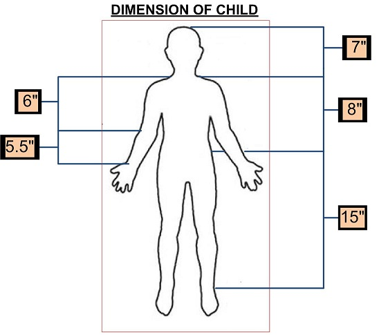
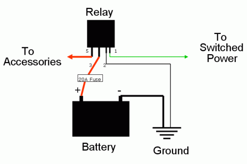

Motorized Tricycle F12
Contents
|
Abstract
A motorized tricycle for a three year old boy with Cerebral Palsy, which has caused lower body mobility issues.
Team members [LAST, FIRST]
- SANDS, JACOB
- CARRUTHERS-THORNE, SAM
- CORTNER, CHASE
- GOTT, LOGAN
- GROOVER, CARL
Introduction
Our group met with the parents of Ethan Campbell on September 15th to introduce ourselves and begin gathering the information we would need to build him a motorized tricycle. Ethan is just shy of three (3) years old and is very small for his age. Ethan has Cerebral Palsy (CP), a disease which causes physical disability in the various areas of body movement. In Ethan's case, his brain does not properly communicate with his legs. This is why he requires a motorized tricycle.
Design Specifications
The trike needs to able to accomplish a number of criteria to fit Ethan's needs.
The trike needs to be able to navigate through multiple terrains such as gravel, dirt, asphalt, etc.
Second, it has to be motorized with a dc motor.
Third, it effectively needs to support his body including leg and torsal.
Last, it needs to be safe and enjoyable for Ethan.
List of Specifications:
- The tricycle needs be able to navigate through multiple terrains (gravel, dirt, asphalt, etc.)
- The tricycle needs to be powered electrically, but will have manual steering.
- The design for the tricycle needs to have a seat w/ backing for support, and should be comfortable for Ethan to sit in.
- The seat will also need a restraint to provide maximum safety.
- The tricycle should be designed to eliminate virtually all possibility of tipping as Ethan has limited balance.
- The frame of the tricycle needs to either be adjustable or sized to accommodate Ethan's growth.
- Finally, Ethan's favorite color is blue so we would like to paint it blue if possible and/or time permits.
 Note:Dimensions are not perfect.
Conceptual Design
Describe potetial designs
Design Concept 1
Our first design utilizes a friction drive motor, similar to that of an electrically powered scooter. The motor will turn the small motor wheel drive that is against a wheel of the tricycle, creating a simple friction drive transmission system.
Design Concept 2
For our second design we have a trike with a chain-to-gear drive system which will rotate the rear axle. It is driven by a DC motor with a 24 Volt power source.
Design Concept 3
Our third design features a DC motor, powered by a twelve volt battery, which transmits power via a chain and taper-lock sprockets. The trike is rear-wheel driven, and the shaft sits in kegged slots.
CONCEPT OF EVALUATION (RATING 1 OUT OF 5)
| CONCEPTS | DESIGN 1 | DESIGN 2 | DESIGN 3 | |
|---|---|---|---|---|
| PRATICAL | 4 | 3 | 3 | |
| MOBILITY | 4 | 3 | 4 | |
| WEIGHT | 4 | 2 | 3 | |
| CONSTRUTION | 5 | 4 | 3 | |
| APPEAL | 4 | 3 | 3 | |
| DURABILITY | 2 | 3 | 5 | |
| COST | 5 | 3 | 4 | |
| TOTAL 35 POSSIBLE POINTS | 27 | 21 | 25 |
NOTE: The greater the points,indicate the better design.
Detailed Design
Detailed description of the concept
After thorough consideration, and contact with the family, it was decided that the original tricycle design for Ethan was not exactly what the family wanted. There were plenty of safety issues as well as operability issues in the tricycle design due to Ethan's size, age, and limited mobility. Our group concluded that we need a more stable vehicle, which would still fit the specifications needed. With this in mind, modifying a Power Wheels Ford F-150 became our most viable option. The size and stability of a four wheeled vehicle is a drastic improvement over the three-wheeled design. Even at Ethan's age, he will be able to operate the Power Wheels model upon delivery. Modifying an existing design also increases the overall feasibility of our project, and will help to ensure prompt delivery with a much lower risk for production error. It is our intent to show, through the following analyses, the stability, and feasibility of our new design.
Analyses
Engineering analysis 1: Torque
The purpose of this analysis is to demonstrate that the torque generated by the Power Wheels will be enough to allow navigation of common slopes and inclines encountered in its operation. The plot of slope angle versus necessary torque shows that the Power Wheels will be able to successfully climb slopes featuring, up to and including, a forty degree angle. In its intended area of operation we do not expect the Power Wheels to come across slopes of more than thirty degrees. Thus we have shown that the Power Wheels will be capable of successfully negotiating all the inclines it is likely to encounter in its everyday use.
Engineering analysis 2: Mobility
The following analysis is to determine the maximum, minimum, and probable turning radii of the Power Wheels; this is done for the purpose of later calculating tipping velocities. The afore mentioned turning radii have been mathematically established according to the following calculations.
Engineering analysis 3: Stability
Our final analysis is to determine the velocities necessary to cause tipping of this product. The necessary equations have been established according to the principles of dynamics, and the radii used in this calculation are obtained from the preceding analysis. These equations have subsequently been entered into a Matlab program to determine the velocities required to achieve tipping. This program has shown that, even for our minimum calculated turning radius, the velocity needed to tip is well outside the range of this Power Wheels, whose maximum velocity is listed as five miles per hour.
Conclusion of Analysis
We have demonstrated, with all necessary discipline and rigor, the practicality, safety, feasibility of our design. It will be able to conquer the terrain of the expected working environment, and will do so in such a fashion as to maintain the safety of its occupant. With our modifications, we will be able to deliver, in a timely manner, a safe and reliable product to the family. This product will either meet, or exceed all requirements, and it is our hope that it will improve the quality of life of the child, for whom, we are building it.
CAD Drawings
This is a relay that will be used to move the throttle to a switch on the steering wheel. 
Bill of Materials
Bill of Materials
| Part Name | Vendor | Part Number | Quantity | Cost per Unit ($) | ||||
|---|---|---|---|---|---|---|---|---|
| Power Wheels Ford F-150 Raptor | Wal-Mart | 000705944 | 1 | 349.00 | ||||
| 3" Wide Rubber Traction Band Set | tractionbands.com | 4199 | 2 | 18.99 | ||||
| 4 Point Passenger Car Seatbelt with Hardware | Wesco Performance | AM-LL-4 point Seatbelt | 1 | 60.90 | ||||
| Zefal Light Set | Wal-Mart | 000714292 | 1 | 19.96 | ||||
| Crown Bolt 1/2" x 36" x 1/16" Plain Steel | Home Depot | 468490 | 2 | 7.62 | ||||
| Everbilt 1" Galvanized Corner Braces | Home Depot | 788795 | 2 | 3.28 | ||||
| SPST Push On-Push Off Switch | Radioshack | 275-617 | 1 | 3.69 | Total estimated price: | 485.71 |
Assembly Instructions
Fabrication Process
Insert pictures of fabrication process
Completed design
Insert pictures of the final product